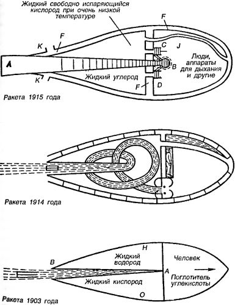

Ракеты и ракетные поезда Константина Циолковского
Константин Эдуардович Циолковский — одна из самых неоднозначных фигур в истории. С одной стороны, никто не может отрицать его заслуг перед человечеством на поприще разработки теоретических основ космонавтики. С другой стороны, он был активнейшим сторонником и пропагандистом людоедской философии чистки генофонда человечества, отстаивая принципы, которые привели бы в ужас даже Гитлера со товарищи. И, наверное, правильно, что человечество помнит первое и постаралось забыть второе, оставив Константину Эдуардовичу оставаться в истории на правах чистого гения, открывшего для всех нас космос.
О Циолковском написано достаточно книг, и я не буду здесь пересказывать его биографию — она хорошо известна. Наша задача состоит в том, чтобы отметить те его проекты, которые так или иначе связаны с вопросом межпланетных перелетов. Замечу, что, как это часто случается с гениями, обогнавшими свое время, ни один из проектов, предложенных Константином Эдуардовичем, так никогда и не был реализован, но зато идеи, заложенные в них, широко используются и по сей день. Время от времени даже случались «переоткрытия» Циолковского, когда вдруг выяснялось, что «новая» и активно обсуждаемая идея уже была сформулирована в одном из его трудов.
Разумеется, Циолковский тоже начинал не на пустом месте. И ранние проекты его основывались на идеях, вычитанных из книг.
Впервые мысль о возможности строительства космического корабля возникла у Циолковского в 1873 году — когда он, в возрасте 16 лет, проходил курс самообучения в Москве. Устройство для запуска межпланетного снаряда по проекту Циолковского представляло собой закрытую камеру, в которой вращалась карусель с противовесами. В нужный момент камера открывалась и снаряд выбрасывался под действием центробежной силы.
Впоследствии Циолковский перебрал практически все известные схемы космических движителей: от аэростатических до электроракетных.
В 1883 году в рукописной работе «Свободное пространство» он пришел к выводу, что единственно возможным способом перемещения в пространстве, где практически не действуют ни силы тяготения, ни силы сопротивления среды, является способ, основанный на действии реакции отбрасываемых от данного тела частиц вещества. Однако начало его серьезных теоретических изысканий в этой области относится к 1896 году. Главная заслуга Циолковского заключается в том, что он объединил техническую идею ракеты с темой межпланетных полетов, создав теорию движения космических ракет.
В 1903 году Циолковский опубликовал свой классический труд «Исследование мировых пространств реактивными приборами», в котором впервые была научно обоснована возможность осуществления космических полетов при помощи ракеты и даны основные расчетные формулы ее полета. В этой же работе было уделено большое внимание вопросу нахождения наилучшего топлива для космической ракеты. До конца XIX века находили применение лишь реактивные двигатели на твердом топливе — пороховые ракеты. Однако Циолковский показал, что для ракет дальнего действия наиболее эффективным явится двигатель, работающий на жидком топливе с окислителем, и дал принципиальную схему такого двигателя.
В то время Циолковский еще не давал конструктивного проекта своего звездолета, считая необходимой детальную проработку его идеи с принципиальной стороны. Поэтому в книге «Исследование мировых пространств реактивными приборами» 1903 года мы встречаем описание конструктивно очень простой ракеты:
«Ракета представляет металлическую продолговатую камеру, имеющую форму наименьшего сопротивления, снабженную светом, кислородом, поглотителями углекислоты и других животных выделений. Ракета предназначена не только для хранения различных физических приборов, но и для управляющего камерой человека. Камера имеет большой запас веществ, которые при своем смешении тотчас образуют взрывчатую смесь. Вещества эти, правильно и довольно равномерно взрываясь в определенном месте, текут в виде горячих газов по расширяющимся к концу трубам, наподобие рупора или духового музыкального инструмента. Трубы эти расположены вдоль стенок камеры по направлению ее длины. В одном, узком, конце трубы совершается смешение взрывчатых веществ, тут получаются сгущенные и пламенные газы. В другом, расширенном, ее конце они, сильно разредившись и охладившись от этого, вырываются наружу через раструбы с громадной относительной скоростью. Весь запас взрывчатого вещества расходуется в течение 20 мин. Труба, по которой текут газы, окружена кожухом с охлаждающей, быстро циркулирующей в нем жидкостью (водород или кислород), температура которой — около 200°.
Для того чтобы ракета при полете не вращалась, сила реакции должна проходить через центр ее инерции. Для восстановления случайно нарушенной инерции можно или перемещать какую-либо массу внутри ракеты, или поворачивать конец раструба или руля перед ним. Если управление устойчивостью вручную окажется затруднительным, то можно применить различные автоматические приспособления (жироскопы, магнитную стрелку, силу солнечных лучей и т. д.). Когда нарушается равновесие ракеты, изображение Солнца, полученное с помощью двояковыпуклого стекла, меняет свое относительное положение в ракете и возбуждает сначала расширение газа, потом электрический ток и затем передвижение масс (которых должно быть две), восстанавливающих равновесие ракеты. Жироскоп может состоять из двух быстро вращающихся в разных плоскостях кругов и также служит Для устойчивости ракеты, действуя на пружинки, которые при деформации возбуждают электрический ток и влияют на передвижение масс.
Толщина стенок трубы в случае стали будет не более 5 мм, однако она может расплавиться (температура плавления — 1300 °C), поэтому следует применить более тугоплавкое вещество, например вольфрам с температурой плавления до 3200 °C».
Значение работы Циолковского «Исследование мировых пространств реактивными приборами» трудно переоценить. Однако в первом десятилетии XX века эта книга осталась незамеченной как в России, так и за границей. Вторично она была напечатана (в значительно расширенном виде) в 1911–1912 годах в журнале «Вестник воздухоплавания».
В этой расширенной работе Циолковский впервые высказал мысль об использовании энергии распада атомов:
«Думают, что радий, разлагаясь непрерывно на более элементарную материю, выделяет из себя частицы разных масс, двигающиеся с поразительной, невообразимой скоростью, недалекой от скорости света. <…> Поэтому, если бы можно было достаточно ускорить разложение радия или других радиоактивных тел, каковы вероятно все тела, то употребление его могло бы давать, при одинаковых прочих условиях, такую скорость реактивного прибора, при которой достижение ближайшего солнца (звезды) сократится до 10–40 лет».
Одновременно он выдвинул идею создания электроракетных двигателей, указав, что «с помощью электричества можно будет со временем придавать громадную скорость выбрасываемым из реактивного прибора частицам».
В дальнейших работах Циолковский более подробно развивает и совершенствует свои проекты, не оставляя мысли о полетах в межпланетном пространстве. Вот как он описывает космическую ракету в 1914 году:
«Левая задняя кормовая половина «ракеты» состоит из двух камер, разделенных не обозначенной на чертеже перегородкой.
Первая камера содержит жидкий свободно испаряющийся кислород. Он имеет очень низкую температуру и окружает часть взрывной трубы и другие детали, подверженные высокой температуре.
Другое отделение содержит углеводороды в жидком виде. Две черные точки внизу (почти посредине) означают поперечное сечение труб, доставляющих взрывной трубе взрывчатые материалы. От устья взрывной трубы (см. кругом двух точек) отходят две ветки с быстро мчащимися газами, которые увлекают и вталкивают жидкие элементы взрывания в устье, подобно инжектору Жиффара или пароструйному насосу.
Свободно испаряющийся жидкий кислород в газообразном и холодном состоянии обтекает промежуточное пространство между двумя оболочками «ракеты» и тем препятствует нагреванию внутренности «ракеты» при быстром движении ее в воздухе.
Взрывная труба делает несколько оборотов вдоль «ракеты» параллельно ее продольной оси и затем несколько оборотов перпендикулярно к этой оси. Цель — уменьшить вертлявость «ракеты» или облегчить ее управляемость. Эти обороты быстродвижущегося газа заменяют массивные вращающиеся диски. Правое носовое изолированное, т. е. замкнутое со всех сторон, помещение заключает:
1. Газы и пары, необходимые для дыхания. 2. Приспособления для сохранения живых существ от упятеренной или удесятеренной силы тяжести. 3. Запасы для питания. 4. Приспособления для управления, несмотря на лежачее положение в воде. 5. Вещества, поглощающие углекислый газ, миазмы и вообще все вредные продукты дыхания».
Система управления ракетой осуществляется с помощью «газовых рулей» и выглядит следующим образом:
«Рули направления и поворота подобны аэропланным. Помещены они снаружи против выходного конца взрывной трубы. Они действуют в воздухе и в пустоте. Их уклонение, а вместе с тем и уклонение ракеты, происходит от давления стремительно мчащихся газов. Подобный же руль, но помещенный отдельно, может служить и регулятором вращения, т. е. он может заставить ракету вращаться в ту или другую сторону, слабее или сильнее, и остановить невольное вращение ракеты, происходящее от неправильного взрывания и давления воздуха. Его действие зависит от винтообразного скашивания пластинки руля, расположенного вдоль потока газов в трубе. Руль от скашивания принимает форму архимедова винта и тем заставляет вращаться продукты взрыва; это и служит причиною вращения ракеты вокруг ее длинной оси или остановки уже имеющегося вращения».
Любопытно описание старта и полета этой ракеты, приведенное Циолковским в работе «Космический корабль» (1924 год):
«Опишем ощущения путешественников, отправляющихся в космической ракете для блуждания кругом Земли, подобно ее Луне, также — наблюдения провожающих. Предполагается, что ракета благоустроена и хорошо исполняет свое назначение.
В ракете несколько футляров формы человека, по числу путешественников. Люди ложатся в них горизонтально по отношению к кажущейся тяжести и заливаются ничтожным количеством воды. Руки расположены тоже в жидкости, но свободнее, так что они могут управлять рукоятками приборов, расположенных также в воде. Приборы регулируют направление ракеты, состав ее воздуха, температуру, влажность, взрывание и проч.
В таком положении путешественники в течение 270 секунд взрывания немного могут заметить. Тяжесть их сильно ослаблена водой. Вода тепла. Холода нет. Окна закрыты плотно непрозрачными ставнями и видеть наружное, что вне ракеты, нельзя. Так бы должно быть.
<… >
Ракета сначала стоит на особых рельсах. Выбрана высокая местность в горах. Найден наклон почвы градусов в 20–30 к горизонту. Местность выровнена, проложены рельсы. На этих рельсах и поместили ракету.
Высота местности 5–6 кило[метров], плотность воздуха половина (0,5), рельсовый путь проложен верст на 100.
Ракета на рельсах в наклонном положении, пол с привинченными сиденьями — так же. Путешественники взошли в ракету, герметически (плотно) замкнулись. Положение крайне неудобно. Сидеть на креслах невозможно, стенки камеры везде наклонены. Значит и ходить нельзя. Можно только поместиться на легких веревочных сиденьях, вроде трапеций, что и сделали наши путешественники, изрядно повертевшись. В окна видны горы, здания, плывущие в темно-синем небе выше и ниже, облака, короче — обыкновенная картина горной местности. Началось взрывание. Оно оглушительно и нехорошо действует на нервы; но пусть наши герои будут ими крепки и не обратят на этот страшный вой никакого внимания.
Ракета покатилась по рельсам, путешественники почувствовали толчок и горизонт, как им показалось, повернулся на 60°. Он стал для них почти отвесной горой. Пол же ракеты сделался почти горизонтальным. Висячие кресла наклонились и приняли параллельное стенкам направление. Тяжесть увеличилась чуть не вдвое, и люди с ужасом завалились в кресла. Подняться с них они могли только при крайнем напряжении сил, но пока не было в этом надобности. <… >
Не прошло и двух минут, как ракета соскочила с рельсов и неслась свободно и далеко от почвы. Движение ее путники не могли заметить, но им казалось, что громадный опрокинутый горизонт проваливается со всеми своими горами, озерами и городами куда-то вниз и вместе с тем отдаляется от ракеты. <… >
Небо темнело. Стали видны планеты и более крупные звезды, несмотря на полный блеск Солнца. Оно также сияло сильнее. Месяц, едва ранее заметный, стал золотиться и сиять, как будто вымытый. Небо давно было совершенно безоблачно, облака же наклонным пологом покрывали местами такой же наклонный горизонт и мешали кое-где видеть опрокинутую землю и море. <…>
Шум в ушах угомонился, ракета как будто стояла, но они знали, что она мчится теперь вокруг Земли, как ее новая Луна, со скоростью 6–7 верст в секунду. Она вне атмосферы, за 3–4 тысячи верст от поверхности Земли. Остановиться сама собой не может; она — спутник Земли».
Следующую свою ракету 1915 года Константин Циолковский описывает так:
«Труба А и камера В из прочного тугоплавкого металла покрыты внутри еще более тугоплавким материалом, например вольфрамом. С и Д — насосы, накачивающие жидкий кислород и водород в камеру взрывания. Ракета еще имеет вторую, наружную, тугоплавкую оболочку. Между обеими оболочками есть промежуток, в который устремляется испаряющийся жидкий кислород в виде очень холодного газа. Он препятствует чрезмерному нагреванию обеих оболочек от трения при быстром движении ракеты в атмосфере. Жидкий кислород и такой же водород разделены друг от друга непроницаемой оболочкой (на чертеже не изображена). J — труба, отводящая испаренный холодный кислород в промежуток между двумя оболочками; он вытекает наружу через отверстия К — К. У отверстия трубы имеется не показанный на чертеже руль из двух взаимно перпендикулярных плоскостей для управления ракетой. Вырывающиеся разреженные и охлажденные газы благодаря этим рулям изменяют направление своего движения и таким образом поворачивают ракету».
В более поздний период жизни Циолковский в своих исследованиях в области межпланетных сообщений основное внимание уделял двум проблемам — достижению космических скоростей и нахождению оптимального топлива для ракеты. Работая над разрешением первой проблемы, Циолковский уже в 1926 году пришел к выводу, что ракета сможет достигнуть космических скоростей лишь в том случае, если получит сравнительно высокую начальную скорость без затраты своего собственного запаса топлива. Проанализировав возможные способы сообщения ракете предварительной скорости, Циолковский пришел к выводу, что «самый простой и дешевый в этом случае прием — ракетный, реактивный». Исходя из этого, он предложил применить для достижения космических скоростей двухступенчатую ракету, первая ступень которой (по терминологии Циолковского — «земная ракета») должна была двигаться по Земле и в плотных слоях атмосферы.

Циолковским был также произведен расчет запаса топлива, массы конструкции, скорости и других параметров каждой ступени.
Дальнейшее развитие теория многоступенчатых ракет получила в книге Циолковского «Космические ракетные поезда» (1929 годы) и в одной из глав рукописи «Основы построения газовых машин, моторов и летательных приборов», которая при жизни ученого так и не была опубликована.
Циолковский предложил два способа достижения космических скоростей: при помощи ракетного поезда и при помощи эскадрильи ракет. Оба способа имели много общего и заключались в том, что в полет отправлялось несколько ракет, из которых конечной цели достигала только одна. Остальные же ракеты играли роль ускорителей и после израсходования топлива возвращались на Землю.
Однако при первом способе (космический ракетный поезд) ракеты соединялись последовательно, одна за другой, и работала только одна головная ракета. После израсходования топлива головная ракета отделялась от ракетного поезда, после чего начинала работать вторая ракета, ставшая теперь головной, и так далее.
При втором способе (эскадрилья ракет) ракеты соединялись параллельно и работали все одновременно, но использовали топливо не целиком, а лишь наполовину. После этого топливо одной части ракет сливалось в полупустые баки другой части ракет, которые продолжали дальнейший путь с полным запасом горючего. Пустые же ракеты отделялись от эскадрильи и возвращались на Землю. Процесс переливания продолжался до тех пор, пока от эскадрильи не оставалась одна ракета.
Рассмотрим проект ракетного поезда, предложенный Циолковским.
Сразу же оговорив, что проект представлен в самом общем виде, Константин Эдуардович переходит к характеристикам ракеты, составляющей «ракетный поезд». Ее поперечник составляет 3 метра, длина — 30 метров, толщина стенок — 2 миллиметра, общий вес ракеты с полезной нагрузкой — 9 тонн. Запас взрывчатых веществ на всю ракету весит 27 тонн. Объем обитаемого пространства составляет 78 м . Если экипаж будет состоять из 10 человек, то каждому достанется около 8 м , или кубическая комната с ребром в 2 метра. Кислорода при удалении продуктов дыхания должно хватить на 16 дней полета.
Так как всем ракетам, составляющим «поезд», предстоит планирование при возвращении на Землю, то каждая ракета имеет следующее устройство.
«Одиночная надутая оболочка, — пишет Циолковский, — имеющая по необходимости форму точеного на токарном станке тела (тела вращения), планировать будет слабо. Надо соединить, например, три таких поверхности. Надутые воздухом или кислородом примерно до двух атмосфер, они представят собою весьма прочную балку. Крылья мы не можем предложить вследствие значительного их веса».
В качестве главного элемента управления используются рули: направления, высоты и противодействия вращению. Они должны действовать не только в воздухе, но и в пустоте. Рули находятся в задней части каждой ракеты. Их две пары. За ними расположены «взрывные» трубы числом не менее четырех. Направление выхлопа в сторону, чтобы не задеть заднюю ракету.
Носовая часть замыкающей ракеты «поезда» занята людьми. Наблюдение за окружающим пространством осуществляется через маленькие кварцевые окна — они нужны для оперативного управления ракетой в момент старта. Большие окна обозрения до момента выхода за пределы атмосферы закрыты ставнями.
За жилым помещением следует машинное отделение (насосы и двигатели для них), наконец, кормовая часть занята взрывными трубами и окружающими их баками с нефтью. Последние окружены баками со свободно испаряющимся жидким кислородом
Вот как описывает Циолковский старт «ракетного поезда»:
«Дело происходит приблизительно так. Поезд, положим, из пяти ракет, скользит по дороге в несколько сот верст длиною, поднимаясь на 4–8 верст от уровня океана. Когда передняя ракета почти сожжет свое горючее, она отцепляется от четырех задних. Эти продолжают двигаться с разбегу (до инерции), передняя же уходит от задних вследствие продолжающегося, хотя и ослабленного взрывания. Управляющий ею направляет ее в сторону и она понемногу спускается на Землю, не мешая движению оставшихся сцепленными четырех ракет.
Когда путь очищен, начинает свое взрывание вторая ракета (теперь передняя). С ней происходит то же, что и с первой: она отцепляется от задних трех и сначала обгоняет их, но потом, не имея достаточной скорости, поневоле возвращается на планету.
Так же и все другие ракеты, кроме последней. Она не только выходит за пределы атмосферы, но и приобретает космическую скорость. Вследствие этого она или кружится около Земли как ее спутник, или улетает далее — к планетам и даже иным солнцам».
Как видите, «ракетный поезд» Циолковского — это вовсе не современная многоступенчатая ракета-носитель.
Идея «эскадрильи ракет» была сформулирована в главе «Наибольшая скорость ракеты» из работы «Основы построения газовых машин, моторов и летательных приборов», опубликованной в 1947 году.
Работа эта примечательна еще и тем, что в ней Константин Эдуардович выступает вразрез со своими предыдущими заявлениями, исключающими ракетный аэроплан как еще один путь возможного развития космической техники.
Подавляющее большинство историков космонавтики сходятся на том, что, несмотря на многообразие идей, выдвинутых Циолковским, он все же сумел сконцентрироваться на «единственно верном» направлении — разработке теории мощных ракет с жидкостным двигателем. Однако это не совсем так. В работе «Наибольшая скорость ракеты» Циолковский как раз анализирует способ достижения космических скоростей посредством ракетоплана. В сущности, упомянутая «эскадрилья ракет» — это несколько ракетопланов, часть которых являются «заправщиками», осуществляя дозаправку «космического ракетоплана» по мере подъема над Землей.
Более того, в этой работе Циолковский приводит приблизительную программу поэтапного совершенствования ракетопланов: от первого «несовершенного и слабого реактивного аэроплана» до группы ракетопланов из 16 машин, способных осуществить выход за пределы атмосферы. Все это напоминает нам «дерзновенные мечтания» Макса Валье, однако вряд ли Константин Эдуардович опирался на труды немецкого популяризатора — скорее всего, к необходимости изменения взглядов в пользу ракетоплана его подвел Фридрих Цандер.